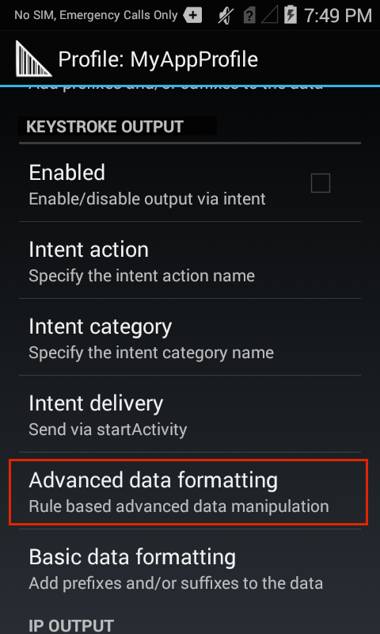
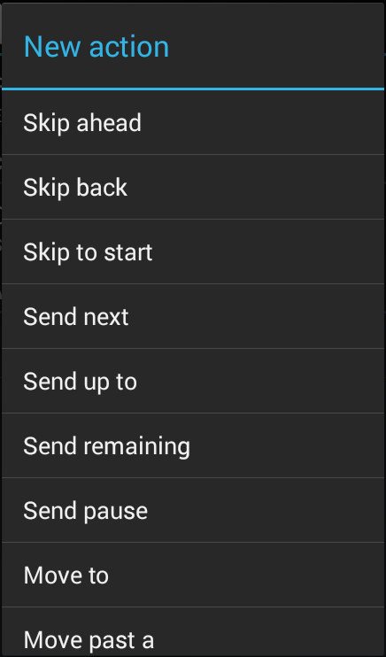
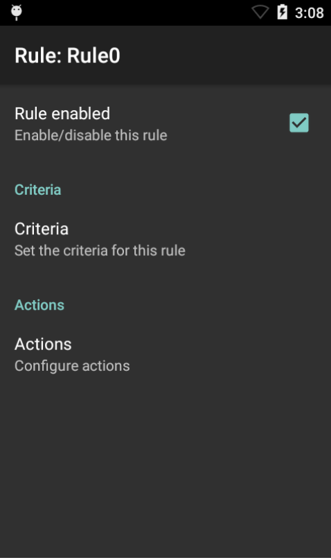

概述
高级数据格式允许基于根据特定条件配置为触发（或防止）操作的内容和/或自定义规则操作已获取的数据。例如，简单的规则可将光标向前移动四个字符或从一个文本字段移动到另一文本字段。仅当获取的 16 位数字与特定组相匹配时，才可能会创建复杂的规则来触发某个操作。可以创建任意数量的规则和相互依赖性，让 DataWedge 有能力满足几乎所有数据处理要求。
数据处理控件显示为“基本数据格式”和“高级数据格式”，并与“输出”设置一起在配置文件的设置面板中分组：
另请参阅：
ADF 组件
高级数据格式功能通过“规则”、“条件”和“操作”进行实施。
规则
一个或多个处理操作的容器和可触发操作的用户可定义条件。所有 DataWedge 输出插件均可包含一个或多个用于处理已捕获的数据的 ADF 规则。
条件
用于执行处理操作的触发器。可以根据输入类型（例如仅条码扫描器中的数据）、码制（例如仅 Code39 数据）和数据中的指定字符串（位于数据字符串中的指定位置和/或具有指定的长度）设置条件。未匹配所有已定义条件的已采集数据不会触发操作。可选择或排除任一或所有支持的条码类型。
操作
用于分析、标识和处理已获取数据的程序集。
四种操作类型：
- 光标移动（例如跳过前 10 个字符）
- 数据修改（例如删除所有空格；在左侧添加四个零）
- 数据发送（例如输出最后四位数字）
- 暂停（例如暂停 50 毫秒，然后再执行下一操作）
创建 ADF 规则
通过三个基本步骤完成“高级数据格式”设置：
- 创建规则
- 定义条件以激活规则
- 定义要按规则执行的操作
这些步骤全部在作为每个 DataWedge 输出插件一部分的高级数据格式处理插件内执行。有关进一步的详细信息，请参阅 DataWedge 设置指南的“插件”部分。
要创建 ADF 规则：
1.在需要 ADF 的配置文件中，轻触高级数据格式，如下突出显示。类似于步骤 2 中的图像的一个屏幕将会出现。
2.轻触“汉堡”菜单，选择“新规则”，然后输入规则的名称。新规则与其他规则一起出现在输出插件屏幕中，此屏幕类似于下面步骤 3 中的图像。

3.轻触新规则以访问其设置。类似于步骤 4 中的图像的一个屏幕将会出现。
设置条件
4.轻触条件，如下突出显示，以输入将会激活规则的条件。

5.从“条件”屏幕中，根据下面的选项输入将会激活规则的条件。

操作条件：
待检查的字符串 - 允许指定字符串；如果已获取的数据中存在该字符串，则会启动操作（即输出已获取的字符串）。如果“起始位置”不存在指定的字符串（参见下文），则不会执行操作。DataWedge 会检查是否存在字母数字或控制字符。例如：
- x - 检查字符“x”
- \xhh - 检查十六进制值为 0xhh 的字符
- \uhhhh - 检查值为 0xhhhh 的 Unicode 字符
字符串位置 - 起始位置（从 0 开始），在此处检查在“待检查的字符串”参数中指定的字符串。例如，如果已获取的字符串是“123ABC123”，则字符串位置为 3 的目标字符串“AB”会调用操作，但如果“AB”位于字符串中的其他位置（或不存在），则不会调用操作。请注意，示例字符串的“AB”部分是从左侧的第四个字符开始，即从 0 开始计数时的位置 3。
字符串长度 - 可选参数，存在特定长度（字符数）时才会调用操作。例如，扫描美国社保号时，可以使用字符串长度九 (9) 作为初始验证的一种方式。
源条件 - 仅在通过条码扫描器（通过其可进一步选择或排除特定解码器）或通过 SimulScan 获取数据时，才可调用操作的可选参数。
6.轻触“后退”按钮以保存并返回到“规则”屏幕。
创建 ADF 操作
要添加操作：
7.从“规则”屏幕上，轻触“操作”，如下突出显示。然后从下一屏幕上的菜单中选择“新操作”。类似于步骤 8 中的图像的操作可滚动列表将会出现。
8.在“操作”列表中，轻触所需的操作，必要时进行滚动。轻触某个操作后，“规则”屏幕将再次出现，并且该操作被添加至“操作”列表底部。有关每个操作的说明，请参阅下表。
支持的 ADF 操作
| 类型 | 操作 | 说明 |
|---|---|---|
光标移动 |
前跳 |
将光标向前移动指定的字符数（默认值=1） |
后跳 |
将光标向后移动指定的字符数（默认值=1） |
|
跳至开头 |
将光标移至数据的开头 |
|
移动到 |
向前移动光标，直到找到在“数据”字段中指定的字符串 |
|
移动超过 |
向前移动光标，使其超过在“数据”字段中指定的字符串 |
|
数据修改 |
删减空格 |
将字词间的空格减至一个并删除数据开头和结尾处的所有空格 |
停止空格删减 |
禁用最后一个删减空格操作 |
|
删除所有空格 |
删除数据中的所有空格 |
|
停止空格删除 |
禁用最后一个删除所有空格操作 |
|
删除前导零 |
删除数据开头的所有零 |
|
停止零删除 |
禁用上一个删除前导零操作 |
|
添加零 |
在数据左侧添加指定数量的零 |
|
停止添加零 |
禁用上一个添加零操作 |
|
替换字符串 |
将指定的字符串替换为新指定的字符串。必须指定两者。 |
|
停止所有替换字符串 |
停止所有替换字符串操作 |
|
删除字符 |
执行发送操作时在给定位置处删除指定的字符数 |
|
停止删除字符 |
在后续发送操作中停止删除字符 |
|
数据发送 |
发送接下来的数据 |
从当前光标位置开始发送指定数量的字符（默认值=0） |
发送剩余数据 |
发送从当前光标位置开始保留的所有数据 |
|
发送目标位置前的数据 |
发送指定字符串前的所有数据 |
|
发送暂停 |
暂停指定的毫秒数（默认值 = 0；最大 = 120000），然后再执行下一操作。Zebra 建议在发送 ENTER、LINE FEED 或 TAB 任一字符后暂停 50 毫秒。 |
|
发送字符串 |
发送指定的字符串 |
|
发送字符 |
发送指定的 ASCII/Unicode 字符。最大 Unicode 字符值为 U-10FFFF（十进制值 1114111） |
- 除非另外说明，否则默认操作值为 0、空或无。
- 为帮助最大程度地减少数据丢失，Zebra 建议在发送 ENTER、LINE FEED 或 TAB 任一字符后暂停操作 50 毫秒。
9.重复步骤 8，直到所有必需操作均出现在类似于下图的操作列表中。由上到下执行操作。要对操作重新排序，请拖动其“汉堡”图标。请参阅下面的附加备注和示例。
 DataWedge 6.2 中的 ADF 规则屏幕（具有多个已配置操作）。
DataWedge 6.2 中的 ADF 规则屏幕（具有多个已配置操作）。
 DataWedge 6.2 中的 ADF 规则屏幕（没有已配置操作）。
操作备注：
- 系统由上到下来处理列表中的操作。
- 要重新定位操作，请拖动操作手柄（在其名称的右侧）。
- 要删除操作，请长按操作名称。
- 发送 ENTER、LINE FEED 或 TAB 操作后暂停操作 50 毫秒可帮助最大程度地减少数据丢失。
规则备注：
- 启用规则（在其规则屏幕中显示复选标记）后，每当使用其父配置文件时即会应用规则。
- 系统根据在规则中定义的操作来处理通过配置文件获取的所有数据，然后再将其传输至选定的输出插件。
- 如果未启用或未定义 ADF 规则，DataWedge 会将已解码数据不加处理地传递至输出插件。
非可打印字符
设置 ADF 数据处理规则来查找或替换控制字符、扩展 ASCII 字符或其他非可打印字符时，DataWedge 支持使用 \xNN 记数法来指定字符的十六进制值和对 Unicode 值使用 \uNNNN 记数法。
例如，如果捕获的数据包含分隔符两侧必须采集的组分隔符 (GS) 字符 (\x1D) 和数据，则以下 ADF 操作可以被添加至 ADF 规则：
要捕获数据：8100712345(GS)2112345678
请执行以下操作：
- 发送 (\x1D) 前的数据
- 前跳 (1)
- 发送剩余数据
ADF 规则示例
以下是高级数据格式规则的创建流程的示例，对数据处理方案来说可能很典型。
条码扫描条件：
- 条码：Code39
- 已解码长度：12 个字符
- 起始位置内容："129"
DataWedge 应该如何设置数据格式：
- 为所有发送内容添加零，使长度为 8
- 发送字符 X 前的所有数据
- 发送空格字符
要为本示例创建 ADF 规则：
- 轻触 HOME -> DataWedge -> Profile0。
- 轻触高级数据格式。
- 轻触启用。
- 轻触 Rule0。
- 轻触条件。
- 轻触待检查的字符串。在文本框中，输入 "129"，然后轻触“确定”。
- 轻触字符串位置。将值更改为 0，然后轻触“确定”。
- 轻触字符串长度。将值更改为 12，然后轻触“确定”。
- 轻触源条件。
- 轻触条码输入。
- 轻触启用所有解码器以取消选中并禁用所有解码器。
- 轻触 Code39，以仅启用 Code39 解码器。
- 轻触后退三次。
- 在“操作”下，轻触并按住“发送剩余数据”，直到一个菜单出现。
- 轻触删除操作。
- 轻触菜单 > 新操作。选择添加零。“添加零”操作将出现在“操作”列表中。
- 轻触添加零操作。
- 轻触多少个。将值更改为 8，然后轻触“确定”。
- 轻触后退。
- 轻触菜单 > 新操作。选择发送目标位置前的数据。“发送目标位置前的数据”操作将出现在“操作”列表中。
- 轻触发送目标位置前的数据操作。
- 轻触字符串。在文本框中，输入 "X"，然后轻触“确定”。
- 轻触后退。
- 轻触菜单 > 新操作。选择发送字符。“发送字符”操作将出现在“操作”列表中。
- 轻触发送字符操作。
- 轻触字符代码。在文本框中，输入 32，然后轻触“确定”。
- 轻触后退。
应出现类似于下面的图像的 Rule0 屏幕。
DataWedge 输出选项：
相关指南：